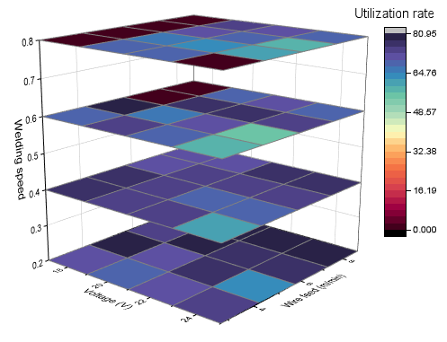

Gestapelte 3D-Heatmaps
3D-Stacked-Heatmaps

Datenanforderungen
- Gezeichnet auf Grundlage eines Arbeitsblatts:
- (1) Sie benötigen XYZ-Daten und eine weitere Referenzspalte, um die XYZ-Spalten in verschiedene Gruppen aufzuteilen.
- (2) Sie benötigen XYZZ...-Daten und eine Spaltenbeschriftungszeile, um die Heatmaps auf der Z-Achse zu positionieren.
- Die XY-Daten sollten ein M*N-Gridding haben. Origin konvertiert jeden XYZ-Block in eine Matrix mit Hilfe der Gridding-Methode Regulär. Wenn die Daten nicht regulär sind, wird die Gridding-Methode Dünn verwendet, um die XYZ-Daten zu konvertieren.
- Gezeichnet auf Grundlage einer Matrix:
- Sie benötigen mindestens drei Matrixobjekte im gleichen Matrixblatt.
Diagramm erstellen
Von einem Arbeitsblatt
Aktivieren Sie das Arbeitsblatt und wählen Sie XYZ + eine Referenzspalte oder Daten der Zuordnung XYZZ....
Wählen Sie im Menü . Der Dialog plot_xyz3dstack wird geöffnet.
Wenn diese Einstellungen vorgenommen wurden, klicken Sie auf OK, um gestapelte 3D-Heatmaps zu erstellen.
Von einer Matrix
Aktivieren Sie das Matrixblatt, das mehrere Matrixobjekte enthält.
Wählen Sie im Menü . Es werden gestapelte 3D-Heatmaps erstellt.
Vorlage
glStackedHeat.otpu (installiert im Origin-Programmordner)
Notizen
- Im Dialog plot_xyz3dstack wird die Option Aufteilen nach verwendet, um eine Spalte zum Aufteilen des Quellarbeitsblatts nach dieser Referenzspalte festzulegen. Die Werte in dieser Referenzspalte werden beibehalten und als Z-Werte verwendet, um die Heatmaps auf der Z-Achse örtlich festzulegen.
- Im Dialog plot_xyz3dstack wird die Option Quelle des Z-Werts verwendet, um eine Spaltenbeschriftungszeile festzulegen und jede XYZ-Heatmap zu fixieren. Sie ist vergleichbar mit der Option Quelle des Z-Werts auf der Registerkarte Allgemeines für den Diagrammlayer im Dialog Details Zeichnung.
- Um gestapelte Heatmaps benutzerdefiniert anzupassen, können Sie folgende Registerkarten verwenden: